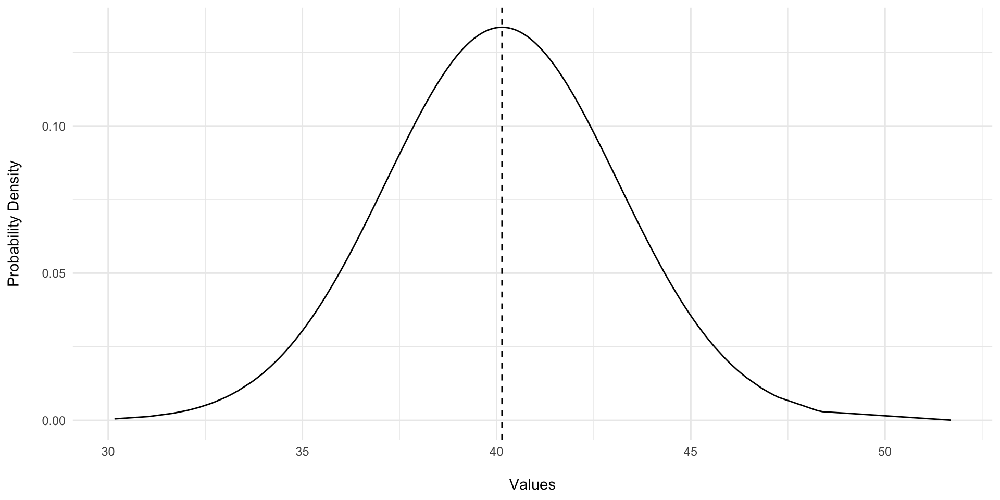
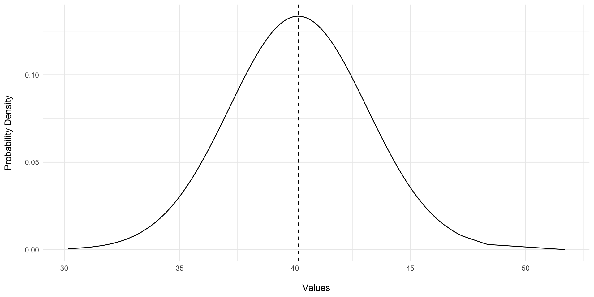
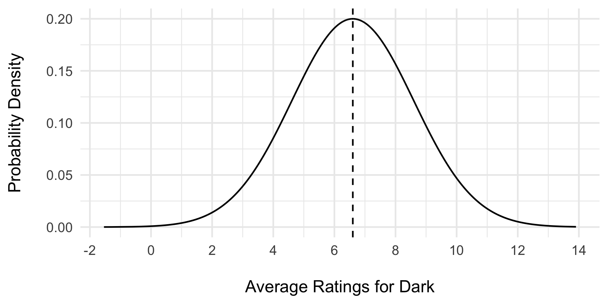
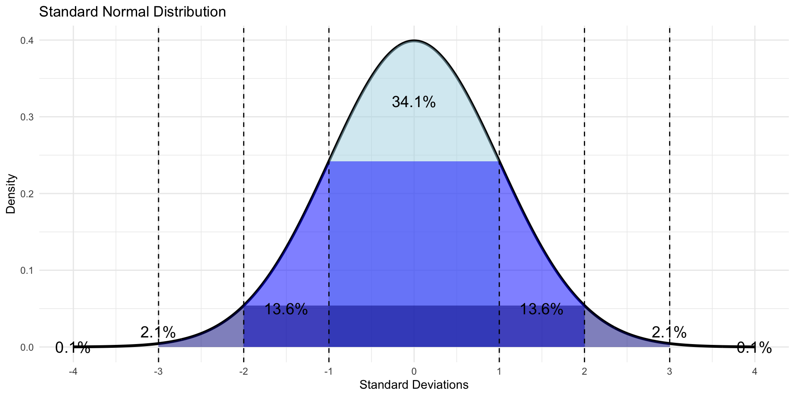
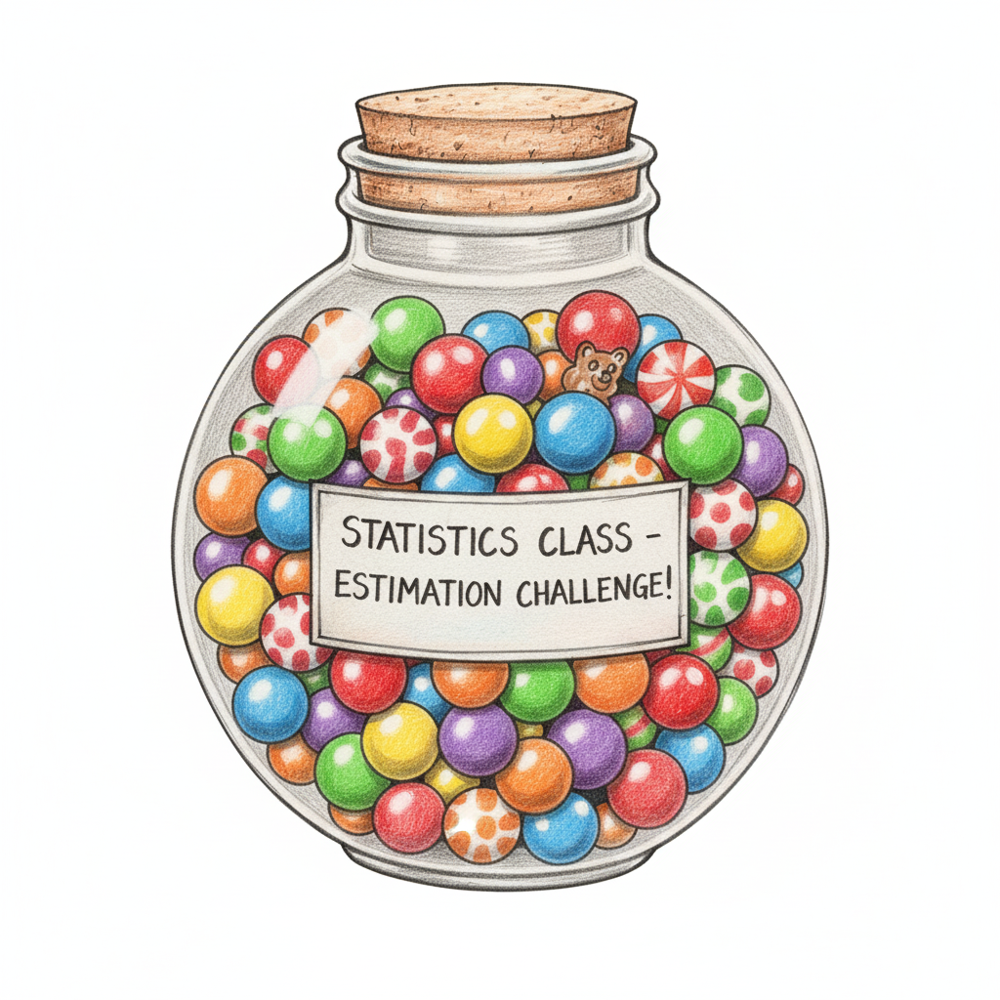
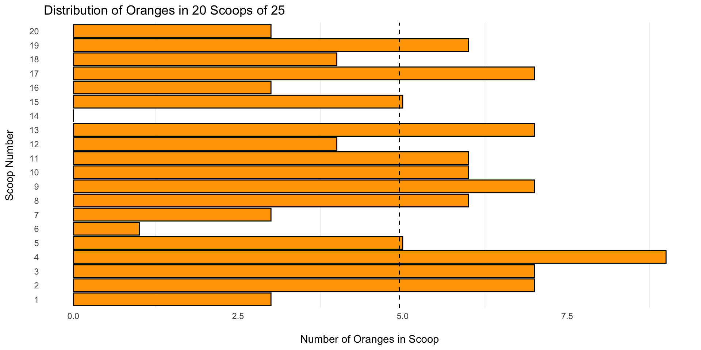
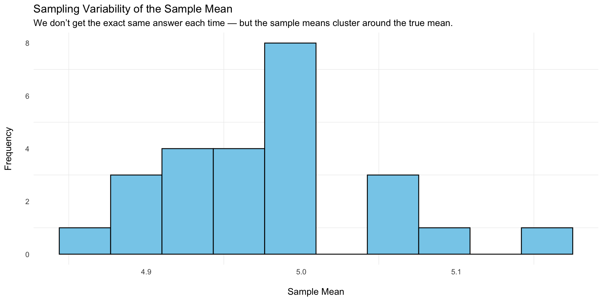
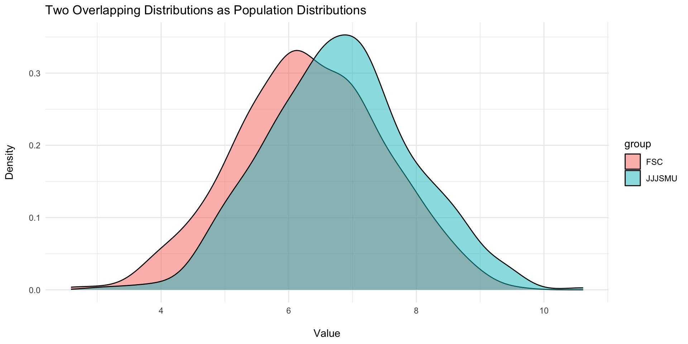
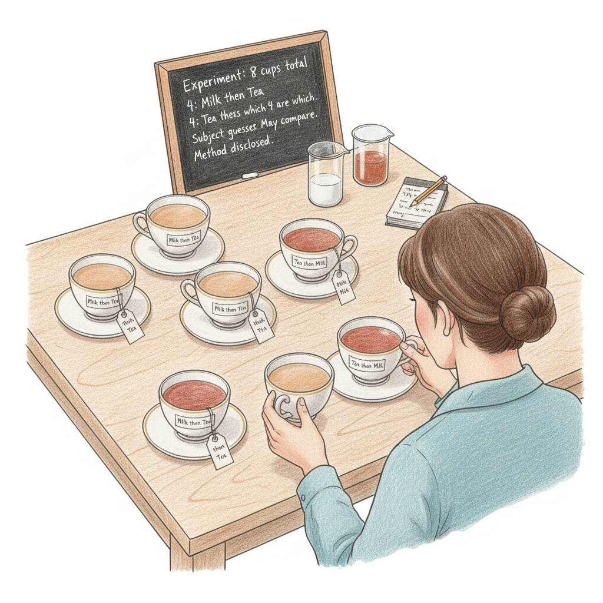
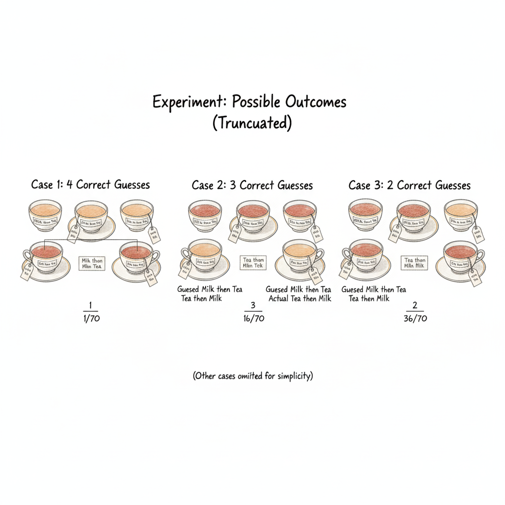

Lecture 7
Farmingdale State College
The 4 properties of a standard normal distribution are:

They are shaped like a bell (“bell curve”).
They are symmetric.
They are unimodal.
The mean = median = mode.
Descriptive Statistics:
Goal: Describe the sample
Inferential Statistics:
Goal: Use the sample to make inferences about the population
Professor Brocker still wants to know how much adults in the US enjoy the Netflix Original, Dark. He has unlimited funds to study this very important research question. He hires 30 students to collect the data. Each student has to collect 500 responses to the following question:
On a scale of 1 (I hate it with my entire being) to 10 (I believe in my soul that Dark is the best show ever made), how much do you enjoy Dark?
Each student asks 500 people how much they enjoy the Netflix Original Dark.
How many people did each of you ask?
library(dplyr)
library(tibble)
library(gt)
library(latex2exp)
# 30 Students in the class
n = 30
# Each student asks 500 people
full_sample = n*500
# Simulate Results
replicate(n = 30,
rnorm(500,5,7)) |> round(0) |>
data.frame() |>
rename_with(.fn = function(x) paste0("S", 1:30)) |>
summarize_all(mean) |>
tidyr::pivot_longer(cols = everything(),
names_to = "Sample",
values_to = "Sample Mean") |>
gt() |>
tab_options(
table.width = pct(60),
table.font.size = 30,
) |>
opt_row_striping() |>
opt_interactive()\(\bar{x}_1 = \frac{\sum(x_1 + x_2 + x_3+x_4...+ x_{500)}}{500}\)
They are the means from each of your samples.
These are called Sample Means
We could calculate the Mean of the Sample Means.
We could calculate the standard deviation of the Sample Means.
But…it’s theoretical. It doesn’t really exist, but we imagine it’s existence for the sake of Sampling Theory.
A Sampling Distribution is the theoretical distribution of means across every single possible sample.
If we took samples of the population until we got every single person in the population, then calculated the mean for each sample, they would distribute like this:

Except now each value in this distribution no longer represents 1 person/participant.
Each value in this distribution represents the average of 1 sample, a Sample Mean.
30 samples of 500 people.
We previously referred to the average as \(\bar{x}\) and the standard deviation as \(s\)
The new terms refer to their specific attributes as a statistic of the sample
\(\mu\) (pronounced like ‘mew’) represents the population mean
\(\sigma\) represents the population standard deviation
| Term | Symbol | Type | Formula | Relation to Sample |
|---|---|---|---|---|
| Sample Mean | \[\bar{x}\] | Sample | \[\frac{\sum x_i}{n}\] | Mean of observed sample |
| Sample SD | \[s\] | Sample | \[\sqrt{\frac{\sum (x_i - \bar{x})^2}{n-1}}\] | SD of sample values |
| Population Mean | \[\mu\] | Population | \[\frac{\sum X_i}{N}\] | True (unknown) mean |
| Population SD | \[\sigma\] | Population | \[\sqrt{\frac{\sum (X_i - \mu)^2}{N}}\] | True (unknown) SD |
Each value in this distribution no longer represents 1 person/participant.
Each value in this distribution now represents the average of 1 sample, a Sample Mean.
This is the distribution of sample means from adults in the US.
What is the probability of any sample having a mean that is a z-score of 2 or higher?
We assume that the distribution of sample means is normal.
We use that assumption to gauge the probability of getting a particular mean from a single sample.
We can literally find that probability, the same way we did with x-values in a normal distribution.
We want to know how much people like pizza.
There are 12,500 people in our population. Each of the 25 of us collects a sample of 500.
\(500 \times 25 = 12,500\)
Each of us calculates the mean response from our sample of 500 people.
What do we call those means?
I randomly choose a mean from our distribution of sample means, about how much people like pizza.
What is the probability of picking a mean with a z-score of -1 or less?
I randomly choose a mean from our distribution of sample means, about how much people like pizza.
What is the probability of picking a mean with a z-score of -1 or less?
Sampling Theory is the body of principles underlying the drawing of infinite samples that accurately represent the population from which they are taken and to which inferences can be made.
Sampling Theory is the idea that if we took infinite samples of a population, they would create a normal distribution.
If that is correct, we can then make guesses about the probability of getting a specific mean.
We will use this probability to gauge significance of our inferential statistics.
The mean of a sample is notated as \(M\).
The mean of a population is notated as (\(\mu\)).
The dispersion of a sample is known as the standard deviation, or \(SD\), or sometimes just \(s\).
\(SE = \frac{\sigma}{\sqrt{n}}\)
\(\sigma\) = Population Standard Deviation
\(n\) - Sample Size
The dispersion of a population cannot be a “deviation” because we don’t actually know it. So instead, we call it the Standard Error, or SE, or most often (sigma).

This is a jar of 500 pieces of candy. There are 5 flavors of candy.
If I took scoops of 25 pieces of candy at a time, on average how many oranges would I get per scoop?
I take a first scoop and 5 of them are orange.
Should I expect to get 5 oranges on average?
Is it safe to assume the 5-Orange scoop came from the Candy Jar?
I take a scoop of 25 pieces of candy, and all 25 of them are orange.
Did this scoop come from the Candy Jar?

A hypothesis is a testable prediction of what will happen in our experiment that:
Names of the variables (independent and dependent)
Clearly contrasts the groups
An Alternative Hypothesis is a testable prediction of what will happen in our experiment that:
Names the variables (independent and dependent)
Clearly contrasts the groups.
The Alternative Hypothesis is written as \(H_1/H_A\)
The Null Hypothesis states that nothing will happen or that there is no difference between. \(H_0\)
Null means zero, nothing
Names the variables (independent and dependent)
Indicates or suggests no difference between the groups
Every year we run a huge campus climate survey. We can’t ask all 10,000 students, so we draw a sample. Now imagine each of you is in charge of your own survey, each collecting 400 students’ responses.
FSC has 10,000 students.
Asking all 10,000 is not practical.
Each of the 25 of us collects a sample of 400 students.
We calculate the average belonging score in each sample.
Sample means will not be identical.
Why?
This variation from sample to sample is called sampling variation.

If we plot all 25 sample means from FSC:
Most cluster near the true population mean.
Some fall higher or lower by chance.
This plot is the sampling distribution of the mean.
As samples get larger, the sampling distribution becomes narrower.
We want to compare FSC students’ sense of belonging to that at another college. We draw 25 samples of 400 at each school.
We repeat the study at John Jacob Jinglehymer Smith University (JJJSMU).
We now have two sampling distributions:
One for FSC
One for JJJSMU
Comparing the two distributions:
Differences in the centers suggest differences in population belonging.
Differences in the spread reflect sampling error.

Sampling distributions let us:
Estimate population parameters.
Understand and quantify sampling error.
Compare populations in a statistically rigorous way.

A classic example of hypothesis testing
Based on R.A. Fisher’s 1935 design
Null hypothesis (H₀):
Alternative (H₁):
Key idea:
We begin by assuming H₀ is true.
We’ll only reject H₀ if the data are too surprising under H₀.
We focus on how many cups she classifies correctly.
For 8 cups (4 of each), under H₀:

| Correct | Probability |
|---|---|
| 8 | 1 / 70 ≈ 1.4% |
| 7 | 16 / 70 ≈ 22.9% |
| 6 | 36 / 70 ≈ 51.4% |
| 5 | 16 / 70 ≈ 22.9% |
| 4 | 1 / 70 ≈ 1.4% |
Since this is less than 5%, it’s rare enough to count as evidence against H₀.
We never prove the alternative; we only judge whether the data are too unlikely under the null.
This logic is the same for t-tests, z-tests, and many modern methods.
[1] 0.01428571[1] 0.01428571 0.22857143 0.51428571 0.22857143 0.01428571Professor Brocker wants to know if Millennials enjoy the Netflix Original, Dark significantly more than Gen Z. He recruits 500 Millennials and 500 Gen-Z students and asks them to rate Dark on a scale of 1 to 10 (10 being fantastic).
Null Hypothesis: These is no difference in the DV between the IV groups.
Alternative Hypothesis: The experimental group is significantly different from the control group on the DV.
Alternative Hypothesis: Millennials will rate their enjoyment of Dark as significantly higher than their Gen Z peers.
Null Hypothesis: Millennials and Gen Z will not differ in their rating of enjoyment of the Dark.
Professor Brocker wants to know if giving his students coffee will improve their exam scores. He randomly assigns
13of his26students to drink a doubleshot; he calls this the experimental group. The other13students drink decaf (a placebo); he calls this the control group.
\(H_0\):
\(H_1/H_A\):
Esmeralda gives an anti-depressant to
100individuals suffering from depression. She gives another100individuals a placebo. After2months, we measure their depression.
\(H_0\):
\(H_1/H_A\):
Jonas assigns half of the participants to engage in aerobic exercise for one hour a day for 6 months. The other half of the participants do not exercise for 6 months. At the end of the 6 months, Jonas measures the participants’ working memory capacity.
\(H_0\):
\(H_1/H_A\):
In science, we do not say that we proved anything.
Our findings will be stated in terms of the Null Hypothesis H0.
The Null Hypothesis is that there are no differences between the groups.
Jonas assigns half of the participants to engage in aerobic exercise for one hour a day 5 days a week for 6 months. The other half of the participants do not exercise for 6 months. At the end of the 6 months, Jonas measures the participants’ working memory capacity.
\(H_0\): There are no differences in working memory capacity between the experimental and control groups.
\(H_1/H_A\): Working memory capacity will be higher for participants who exercise for one hour compared to the group that does not.
In science, we do not say that we have proven anything.
Our findings will be stated in terms of the Null Hypothesis.
If there are significant differences between the groups, we Reject the \(H_0\).
If there are NO differences between the groups, we Fail to Reject the \(H_0\).
When reporting your findings, you must state them in terms of the Null Hypothesis. We do not mention the Alternative Hypothesis.
If the groups differ, we reject the null hypothesis:
If the groups do not differ, we fail:
Jonas assigns half of the participants to engage in aerobic exercise for one hour a day
5days a week for6months. The other half of the participants do not exercise for6months. At the end of the6months, Jonas measures the participants’ working memory capacity. His test is not significant.
Brendan assigns half of the participants to view a picture of a face on a mortuary table (control condition). The other half of the participants view an image of their own face made to look dead using an filter (experimental condition). Brendan then measures all participants’ anxiety about dying and runs a t-test, which is statistically significant.
State Brendan’s findings in terms of the null hypothesis:
Brendan rejects the null hypothesis that states there is no difference in death anxiety betwen participants who view their own face as deceased and those who only view a face on a mortuary table.
John scores an
87on a test. If the SD is2and the mean is90, what percentage scored higher than John?